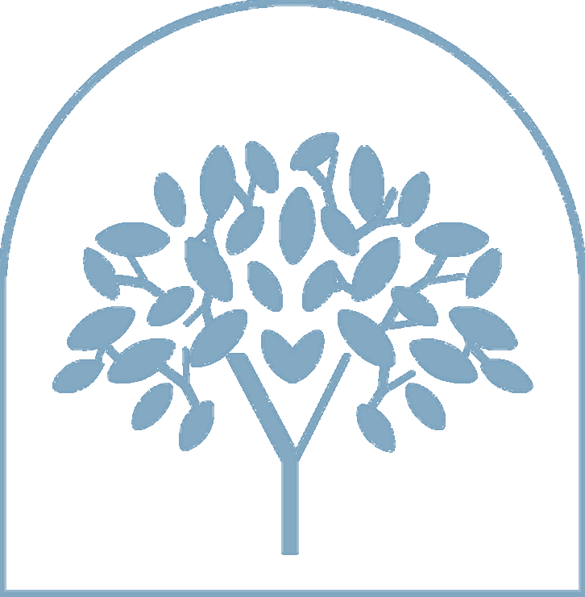

Cuidados
Paliativos
Cuidado ativo que alivia sintomas, sustenta a dignidade e acompanha o paciente e sua família em cada etapa, promovendo qualidade de vida e conforto.
Saiba mais
Paliativista · Pneumologista
Dra. Yanne Amorim · [CRM-XX XXXXXX]
Médica paliativista e pneumologista. Cuidados paliativos humanizados, controle de dor e qualidade de vida. Uma medicina que permanece ao seu lado — com presença, técnica e respeito profundo em cada fase da vida.
Foto da Dra. Yanne
Registro Médico
[CRM-XX XXXXXX]
Atendimento
Presencial &
Telemedicina
“Cuidar é permanecer.”
Permanecer quando o silêncio chega. Quando o tempo muda de ritmo. Quando a vida pede mais presença do que respostas. Cuidar não é apenas tratar sintomas. É sustentar dignidade. É olhar nos olhos. É tocar com respeito.

Quem é a Dra. Yanne
Dra. Yanne Amorim é Médica Paliativista e Pneumologista com formação dedicada ao cuidado integral do ser humano. Especialista em cuidados paliativos humanizados — controle de dor, qualidade de vida e suporte familiar — e em doenças respiratórias como asma, DPOC e nódulos pulmonares, ela une excelência técnica, presença emocional e compromisso ético inegociável.
Sua medicina não nasce do desejo de ascensão profissional — ela nasce do sentido. Cada consulta é um espaço de presença genuína, onde o tempo desacelera para que você seja realmente ouvido.
Áreas de Atuação
Cuidados paliativos e pneumologia sob o mesmo olhar cuidadoso. Uma medicina que não abandona.
Cuidado ativo que alivia sintomas, sustenta a dignidade e acompanha o paciente e sua família em cada etapa, promovendo qualidade de vida e conforto.
Saiba maisDiagnóstico preciso e tratamento moderno de asma, DPOC, nódulos pulmonares, pneumonias e outras doenças do aparelho respiratório.
Agendar consultaDiagnóstico e controle da asma, prevenindo crises e garantindo qualidade de vida.
Manejo da Doença Pulmonar Obstrutiva Crônica com tratamento moderno e contínuo.
Investigação e acompanhamento com rigor diagnostico.
Suporte paliativo especializado no controle de dor e sintomas.
Diagnóstico rápido e tratamento eficaz de infecções respiratórias.
Acolhimento e orientação nos processos de cuidado e decisão.
Orientação e suporte para pacientes em cuidados no lar.
Consultas online com qualidade, para você ser atendido onde estiver.
Cuidados Paliativos
Os cuidados paliativos não se restringem ao fim da vida — eles começam no diagnóstico. São uma abordagem ativa e integral que melhora a qualidade de vida de pacientes e familiares diante de doenças graves.
Manejo eficaz da dor, dispneia, fadiga e outros sintomas.
Presença ativa nas dimensões mais profundas do cuidado humano.
Orientação, escuta e suporte para que a família também seja cuidada.
Respeito as preferências e valores do paciente em cada decisão.
“Há vida em cada instante. E cada instante merece cuidado.”
Dra. Yanne Amorim · Manifesto da MarcaComo funciona
Do primeiro contato ao acompanhamento contínuo — cada etapa pensada para você.
Entre em contato via WhatsApp. Nossa equipe orienta sobre o agendamento e o que esperar.
Escuta ativa, anamnese detalhada e exame clínico completo. Você é ouvido.
Investigação baseada em evidências. Cada resultado explicado com clareza.
Plano terapêutico construído junto com você, respeitando seus valores.
Presença contínua. Retornos regulares e cuidado que não desaparece.
Depoimentos
Relatos reais de quem encontrou presença, segurança e cuidado genuíno.
Perguntas frequentes
Qualquer outra dúvida, entre em contato.
Ainda tem dúvidas?
Fale pelo WhatsApp →Consulte uma pneumologista se apresentar tosse persistente por mais de 3 semanas, falta de ar frequente, chiado no peito, dor torácica ou infecções respiratórias de repetição. O diagnóstico precoce faz toda a diferença.
Cuidados paliativos são uma abordagem que melhora a qualidade de vida de pacientes e familiares diante de doenças que ameaçam a vida. Incluem controle de dor e sintomas, suporte emocional, espiritual e ao núcleo familiar.
Sim! A Dra. Yanne realiza consultas online para todo o Brasil, com a mesma qualidade das consultas presenciais. A telemedicina é reconhecida pelo CFM como forma segura de acesso a cuidados especializados.
O agendamento é feito diretamente pelo WhatsApp. Basta clicar em qualquer botao "Agendar consulta" nesta página.
Traga documentos de identidade, cartao do plano de saúde (se houver), exames anteriores, lista de medicamentos em uso e receitas recentes.
Entre em contato via WhatsApp para verificar os convênios aceitos e condições de atendimento particular.
Não. Cuidados paliativos não significam desistência — significam uma escolha ativa pelo que ainda e possível: qualidade de vida, controle de sintomas e dignidade.
Onde estamos
Atendimento presencial no consultório e online para todo o Brasil.
Endereço
[Rua, numero — Bairro]
[cidade] — [UF], CEP [00000-000]
Horário de atendimento
Segunda a Sexta — 08h às 18h
Sabado — 08h às 12h
Agendamento
Telemedicina
Consultas online para todo o Brasil
via plataforma segura
Dê o primeiro passo. Uma consulta pode ser o início de um cuidado que muda a forma como você vive — com mais qualidade, dignidade e presenca.
Agendar pelo WhatsApp Resposta em até 24h